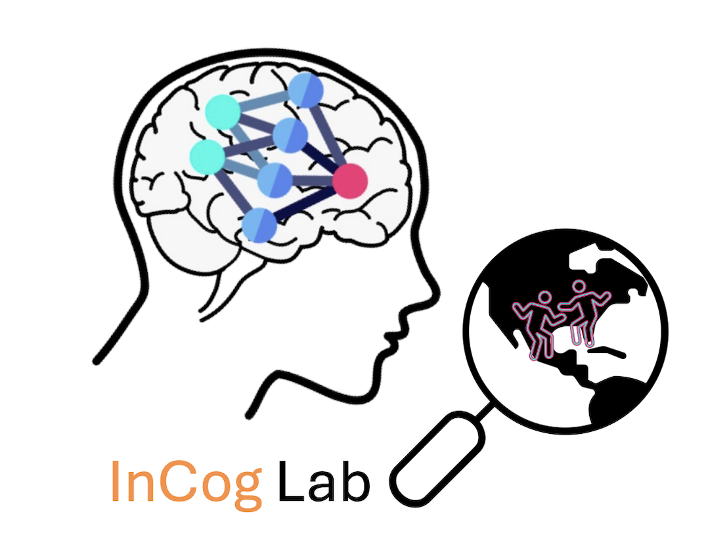

Rouhani, N., Grossman, C.D., Feusner, J., & Tusche, A. (2025). Eating disorder symptoms and emotional arousal modulate food biases during reward learning in females. Nature Communications. [Paper] [Data & Code]
Rouhani, N., & Murty, Vishnu P. (2025). Episodic contributions to predictive learning. Neuroscience & Biobehavioral Reviews. [Paper]
McClay, M., Rouhani, N., & Clewett, D. (2025). Negative emotional events retroactively disrupt semantic scaffolding of temporal memory. Emotion. [Preprint]
Rouhani, N., Clewett, D., & Antony, J. (2024). Building and breaking the chain: A model of reward-prediction-error integration and segmentation of memory. Journal of Cognitive Neuroscience. [Preprint] [Paper]
Rouhani, N., Niv, Y., Frank, M.J., & Schwabe, L. (2023). Multiple routes to enhanced memory for emotionally relevant events. Trends in Cognitive Sciences. [Preprint] [Paper]
Rouhani, N., Stanley, D., COVID-Dynamic Team, & Adolphs, R. (2023). Collective events and individual affect shape autobiographical memory. Proceedings of the National Academy of Sciences. [Paper] [Data & Code]
Horwarth, E.A., Rouhani, N., DuBrow, S., & Murty, V.P. (2023). Value restructures the organization of free recall. Cognition. [Paper]
Rouhani, N. & Niv, Y. (2021). Signed and unsigned reward prediction errors dynamically enhance learning and memory. eLife. [Paper] [Data & Code]
Rouhani, N., Norman, K.A., Niv, Y., & Bornstein, A.M. (2020). Reward prediction errors create event boundaries in memory. Cognition. [Paper]
Rouhani, N. & Niv, Y. (2019). Depressive symptoms bias the prediction-error enhancement of memory towards negative events in reinforcement learning.Psychopharmacology. [Paper]
Rouhani, N., Wimmer, G.E., Schneier, F.R., Fyer, A.J., Shohamy, D., & Simpson, H.B. (2019). Impaired generalization of reward but not loss in obsessive-compulsive disorder Depression and Anxiety.. [Paper]
Rouhani, N., Norman, K.A., & Niv, Y. (2018). Dissociable effects of surprising rewards on learning and memory. Journal of Experimental Psychology: General. [Paper]
DuBrow, S., Rouhani, N., Niv, Y., & Norman, K.A. (2017). Does mental context drift or shift? Current Opinion in Behavioral Sciences. [Paper]